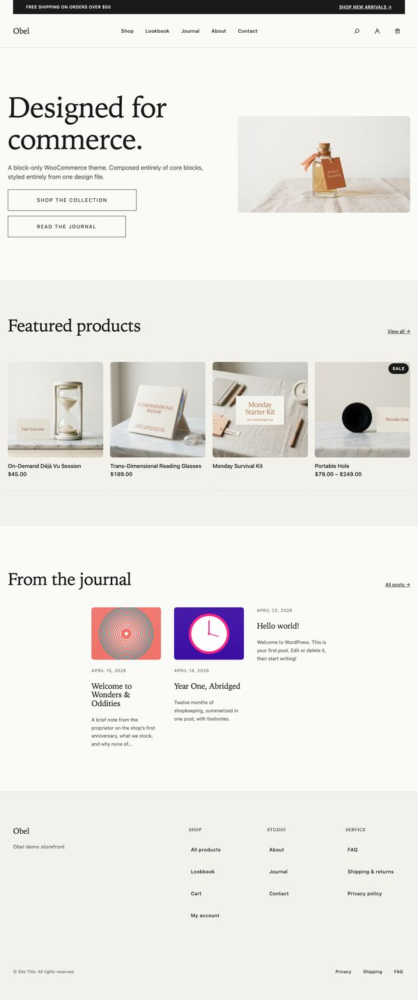
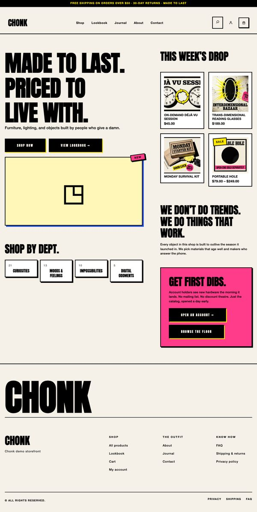
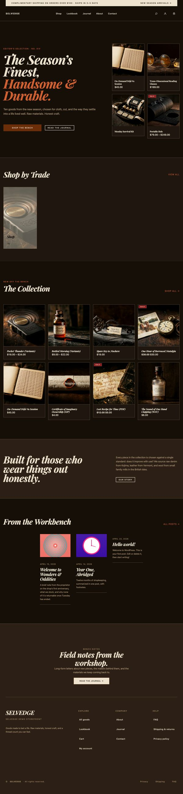
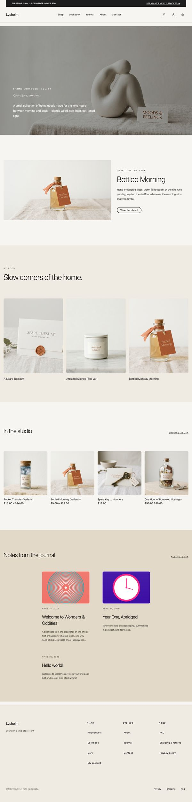
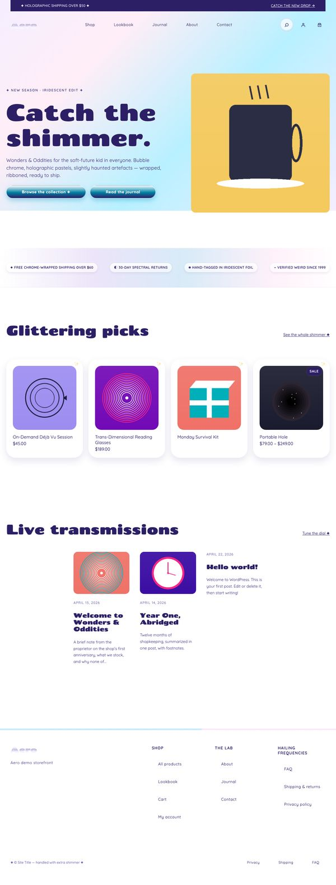

fifty / snaps
Snap gallery
Every snap PNG for every theme, grouped by viewport. Generated from on-disk PNGs by bin/build-snap-gallery.py; rebuild after bin/snap.py shoot.

obel
Editorial: hairline borders, generous whitespace, warm cream palette.
61 shots494 warn· tmp/snaps

chonk
Neo-brutalist: cream + 4px black borders, hard offset shadows, no rounded corners.
61 shots474 warn· tmp/snaps

selvedge
Workwear-heritage: warm dark palette, italic display serif, small-batch maker's voice.
61 shots552 warn· tmp/snaps

lysholm
Nordic home goods: pale cream, soft tan accents, unhurried serif typography.
61 shots524 warn· tmp/snaps

aero
Y2K iridescent: holographic pastels, glassy chrome buttons, sparkle product cards.
61 shots512 warn· tmp/snaps